AOS Lecture Notes - Lesson 4 - Sharing Semantics
Shared Memory Machines
- Three structures:
- In every structure there will be CPU’s, memory and an IC network.
- Also, full address space of all memories accessible from any of the CPU’s
- Also, cache associated with each CPU
- Dance Hall Architecture
- CPU’s on one side, memory on other, of an IC network
- 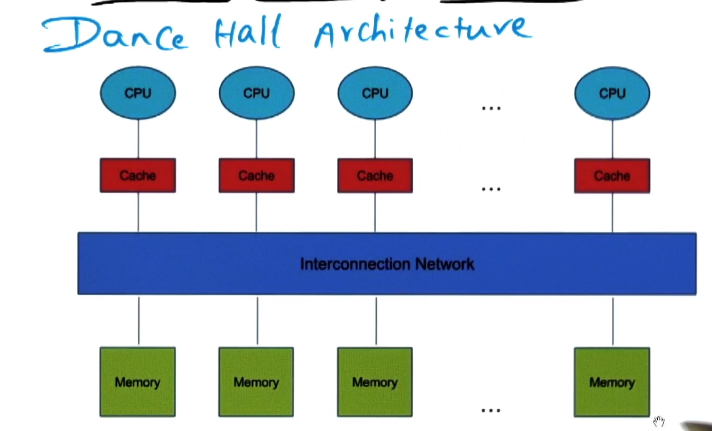
- Symmetric Multiprocessor (SMP) Architecture
- Access time from any CPU to memory is the same
- 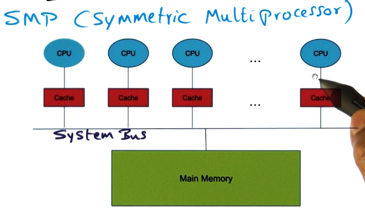
- Distributes Shared Memory (DSM) Architecture
- A piece of memory associated with each CPU
- Each CPU can still access all memory, but the piece that is closest will be fastest.
- 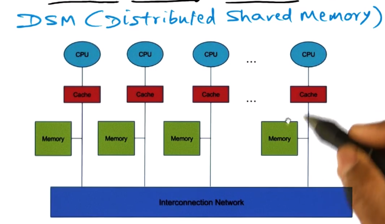
- In every structure there will be CPU’s, memory and an IC network.
- Shared Memory and Caches
- SMP example for simplicity
- cache serves exact same purpose in multiprocessor as it does in uniprocessor
- CPU, when accessing memory, preferentially accesses cache. If cache miss, go to main memory, and add to cache.
- Cache in MP associated with each CPU performs as it does in uniprocessor
- however there is a unique problem with an MP system – caches are unique to each CPU but memory is shared among them
- If a value is updated in one cache, but is outdated in other caches, what should happen? This is the “cache coherence problem”
- Hardware and software must agree on memory consistency model (developer using this system must know the rules the system is playing by to write correct software)
Memory Consistency Model
- The model dictates what expectations the developer can have around ordering of memory reads and writes
- Example given is that the memory accesses on a given processor will always happen in the same order, but the interleaving across multiple processors is arbitrary
- This is called Sequential Consistency (SC)
- covered in more detail in my GIOS Lecture Notes on Distributed Shared Memory
- Memory Consistency and Cache Coherence go hand in hand
- Memory consistency: What is the model presented to the programmer?
- Cache coherence: How is the system implementing the model in the presence of private caches?
Hardware Cache Coherence
- If the hardware is going to handle this, there are two approaches possible
- Write invalidate
- If a processor writes to a memory location in its own cache, the hardware will ensure that location is invalidated in all other caches
- This is done by broadcasting a signal on the IC Bus, “invalidate memory location X”. This propagates, and caches are watching on the bus for this, and will handle it if seen
- Write update
- If a processor writes to a memory location in its own cache, the hardware will ensure that location is updated to the new value on all other caches
- Same propagation and cache snooping on Bus to accomplish this
- Both of these approaches do involve overhead, however. Further, this overhead grows with number of processes, and with complexity of interconnect medium
- So how does this scale? If you add more processors, does performance increase?
- Pro in adding more processors is that it allows you to exploit parallelism
- Con is the increased overhead discussed.
- This flattens the scalability curve of adding processors to a system to increase performance.
- 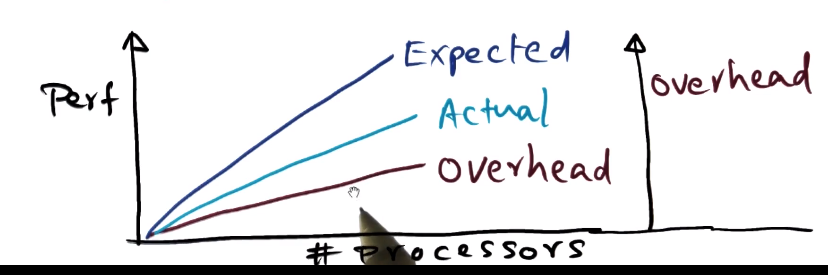
-
Honest solution is “don’t share memory across cores”, there’s always going to be some cost if you do.
- Synchronization
- Going to focus on sync algorithms
- Key for parallel programming.
Locks
- Protects shared data structures from multiple threads. Allows thread to make sure that when accessing shared data, it is not being interfered with
- Two kinds:
- Exclusive lock: mutex, one thread at a time
- Shared lock: multiple threads can access data at same time
- e.g. multiple readers, single write
Barriers
- Multiple threads all doing computation, but on reaching a given point wait for every other thread to reach that before proceeding
- Analogy is waiting at a restaurant for your entire party before you can be seated
Read/Write to Implement a Mutex
- Example is given where process2 wants to use a struct, but wants to wait until it’s done being modified by process1. The question is posed as to whether this is possible given only read/write atomics available.
- The answer is yes, as a simple flag variable can serve, with each process checking the flag, and updating it to 0/1 to signal the other.
Atomic Operations
- Instructions needed to implement a mutex
- Lock/Unlock operations displayed here, using simple flag, if/while ops
- The challenge though is that read and write group for the lock check need to happen at once – be atomic
- so, we need a new Read/Modify/Write (RMW) semantic, a new atomic instruction
- Test_and_set instruction takes a memory location as input, returns current value in that memory location, and sets that location to desired value (1 in this example). Atomically!
- Fetch_and_inc takes a memory location as input, returns current value in that location, and increments the value in that location. Atomically!
- Generically the above are referred to as “Fetch_and_Phi”. There are many similar such instructions.
Scalability Issues with Synchronization
- Sources of inefficiencies are:
- Latency: time spent by thread in acquiring a lock
- Waiting time: how long must you wait to get a lock (partially a function of whatever use pattern the application has, OS can’t do much here)
- Contention: when lock is released, how long does it take, in presence of contention, for one thread to get lock and the others to stop trying to acquire
Naive Spinlock (Spin on Test and Set)
- 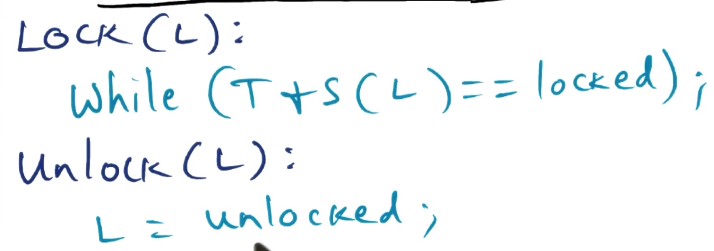
- Processor will spin waiting to get lock
- initialize lock to unlocked
- spin on T+S atomic instruction
Problems with this approach
- too much contention – all threads go after lock when released even though only one can get
- does not exploit caches – spinning on an atomic goes to main memory every single iteration
- disrupts useful work – when a processor acquires the lock it wants to continue doing work, but the IC contention from other processors vying for lock reduces effectiveness of the winner
Caching Spinlock (Spin on Read)
- 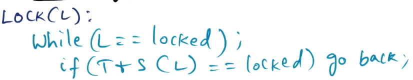
- Spin on cached value of lock (leverage cache coherence of architecture to ensure other caches also see correct value of lock)
Problems with this approach
- too much contention – when cached lock value changes, every CPU hits bus all at once, floods the bus
- disrupts useful work – same issues as Spin on Test and Set
Spinlock with Delay
- on lock release, delay a while before vying for lock
Two alternatives
- Delay after lock release
- 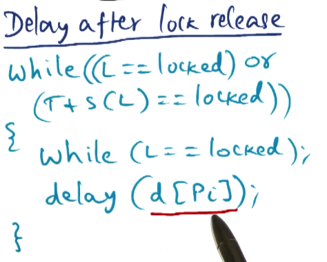
- delay chosen differently for each processor, so even though all see the lock value change at once, only one will go check it
- this is a static delay, though, so you will waste time on longer-delayed processors
- Delay with exponential backoff
- 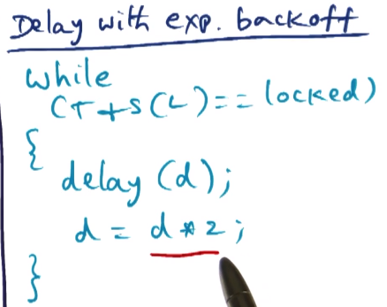
- initial value of delay is small, but if lock is not free when check, increase value exponentially
- this allows contention to be managed, as more contention will result in longer delays, reducing contention on future rounds of checking
- This works even on NCC architectures as we are always checking with T+S, thus not relying on cache values being kept in agreement with each other
Ticket Lock
- Above solutions to do not consider “fairness”, only latency and contention.
- Should we not try to give lock to the process that requested it first?
- 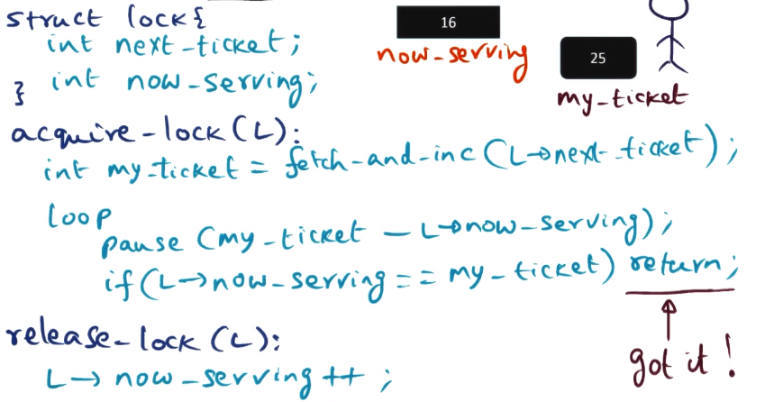
- check lock after appropriate delay, estimated by difference between “my_ticket” and “now_serving”
- Achieves fairness, but still have issues with contention when lock is released
Spinlock Summary
- Read & T+S & T+S with Delay: no fairness
- Ticket Lock: fair but still has problems with contention
Array-based Queuing Lock (Anderson’s Lock)
- 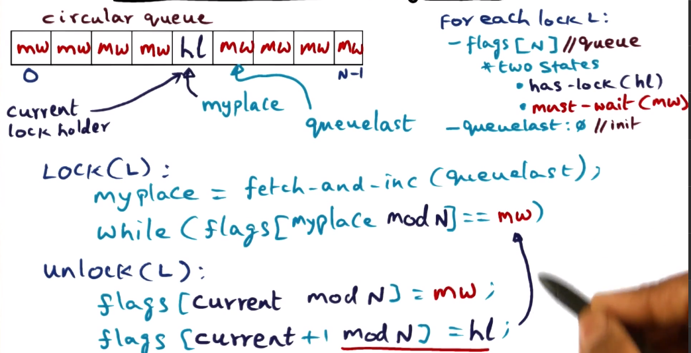
- array of flags associated with each lock – size of array is number of processes
- array serves as circular queue
- each element in flag array is either “has-lock” (hl) or “must-wait” (mw) state (obvious what those indicate)
- only one processor can be in hl state
- initialize array by marking one slot as hl and all others as mw
- slots are not statically associated with any one processor, dynamically populated as request comes in. enough spaces that there’s one available per processor, but not static.
- circular queue means you must keep track of where the end is, as future requests will loop around to beginning of queue1:w
- Addresses contention by virtue of unlock function handing access to next position in the queue. Also by having each lock requester spinning on its own variable (array slot flag).
- Addresses fairness by iterating through the queue addressing requests in the order received
- In situation where there is a small subset of processors requesting this lock, the array is unnecessarily large and so wastes space. This is the only downside to this approach.
Linked List-based Queuing Lock
- 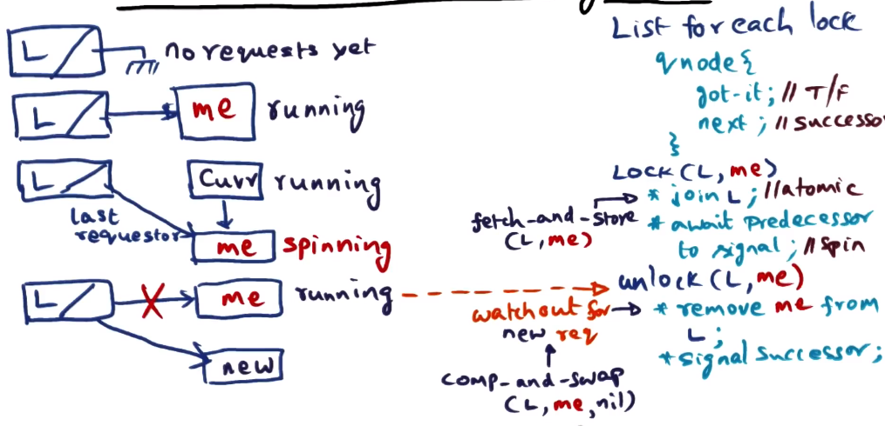
- To avoid space complexity in Anderson Lock, we will use a linked list instead of an array for the queue
- Sometimes referred to as MCS lock based on authors
- Every lock starts with a dummy node to indicate no lock requesters
- dummy node has one member: a pointer “l”, to indicate last_requester
- Every node object will have two fields, “got it” and “next’
- got_it is a boolean
- next_is a successor
- Queue means that fairness is assured, same as Anderson lock
- next_is being set to null indicates no requesters waiting for the lock
- nodes/processors spin on got_it field, unlock sets next_is node to true breaking its spin
- joining queue requires atomic fetch_and_store of node pointer into next_is field of appropriate predecessor, and to last_requester field of dummy node
- obviously most (all?) architectures will not have fetch_and_store, so you must simulate with test_and_set
- in special case when there is no successor to currently running process, last_requester on dummy node is set to null to indicate nobody holds the lock
- new requests arriving while this is happening can run into a race condition where last_requester is set to new request but next_is on currently running process is null, and then currently running process sets last_requester to null, effectively erasing the new request from the waiting process
- solution here is for currently running process to atomically comp_and_swap last_requester on dummy node, such that it will set last_requester to null only if last_requester is still pointing to current process node. This means that it cannot overwrite the new requests pointer
- comp_and_swap may also need to be simulated with test_and_set if it isn’t available on target architecture
- if comp_and_swap fails it returns false. in this circumstance the current process will spin on its next_is member being null, waiting for the new request to finish forming to unlock and hand the lock over to the new process
- This has all the benefits of the array-based queuing lock, with the addition of wasting less space in circumstances where there are far fewer requesters than processors on average.
- Downside is some increased overhead around linked-list maintenance. So while it’s smaller than Anderson’s lock, it’s often also slower
- both Anderson’s Lock and this lock also both take a hit if the architecture doesn’t support the more exotic atomics and you’re stuck simulating with test_and_set
Summary of Lock Performance
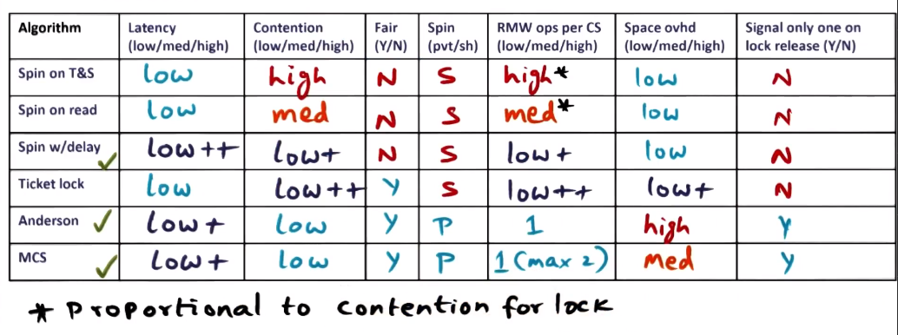
Communication
Barrier Synchronization
Centralized Barrier (aka Counting Barrier)
- counter is initialized to N where N is number of threads that must wait at the barrier
- when a thread arrives at the barrier it must atomically decrement the count, and then wait for count==0
- all processors except last one will spin, the last one hits the count==0 and resets the count back up to N
- Problem here is that resetting count to N is not atomic, the other waiting threads may speed ahead past the next barrier before count is reset to N while it is still 0.
- Solution: add another spin loop after count==0 where each thread will now wait until count == N to proceed
- Having two spin loops for every barrier is rather inefficient though
Sense Reversing Barrier
- Solves two spin loops problem from Counting Barrier via removing second/reset_N spin loop
- In addition to count, we have a new variable: sense
- Sense will be true for one barrier episode, false for the next barrier episode
- 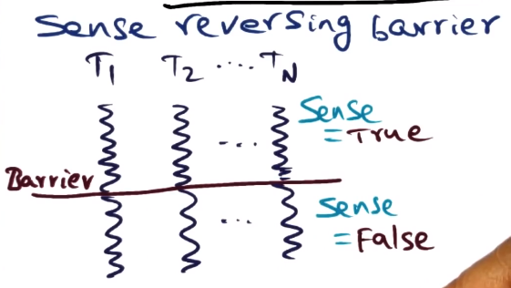
- On barrier arrival each thread will decrement the count and spin on sense reversal
- e.g. if count == 0 then reverse sense
- accomplishes the same thing as above, but without need of spinning on reset to N as sense polarity will be flipped immediately even if next barrier is reached by other threads
- Still has contention issues, as everything is hitting the same shared sense variable. Bad for scalability.
Tree Barrier
- Leverages divide and conquer, limit the amount of sharing to a small number of processors
- Break large number of processors up into small groups of k number of processor
- if you have N processors grouped into k-sized groups, you will have $log_{k} n$ levels in your tree (example given is 8 processors in groups of 2 resulting in 3 levels)
- Arrival at a barrier – at a micro level the algorithm works just like sense reversing
- each group of k processors shares count and locksense variables
- count and locksense replicated at every level of the tree
- count is decremented on arrival at barrier by each process. count is set equal to k. If count!=0 the process will wait for locksense to reverse, same as sense reversing barrier.
- when count goes to 0 at lowest level, process which gets it down to 0 proceeds up to next level and decrements count variable at next level up, but does not flip lowest level locksense variable.
- This propagates up the tree until top-level count hits 0, then all locksense variables at all levels flip at once
- backbone of algorithm is:
- if count==0 and has_parent==1 then recurse (up a level)
- else if count==0 and has_parent==0 then reverse locksense on self and all children
- else spin on locksense
- backbone of algorithm is:
- This reduces contention for any one locksense variable as they’re split across groups and levels.